# load libraries
library(tidyverse)
library(lubridate)
library(ggthemes)
library(ggpubr)
library(skimr)Capital Bike Sharing Analysis
Introduction
A Bike sharing system is a shared transport service where bicycles are available for shared use by individuals at low cost. It allows individuals borrow a bicycle from a station, ride it to a specific destination and then return it to any station within the system. Bike sharing presents benefits such as convenience, affordability, eco-friendly and it is a great way for bikers to get some exercise and fresh air.
In this notebook, we analyse the total hourly demand of bikes in all stations in Washington DC. This bike service is provided by Capital bikeshare where an individual can unlock a bike by scanning its QR code using an app, ride on it and then park it at the nearest docking station in their destination. Two types of bikes are provided - electric (E-bikes) and classic bikes- and an individual can rent them on short-term option by renting a single ride, obtain a day pass or monthly membership and long-term by an annual membership option.
Dataset Description
Dataset includes hourly bike rides made by registered and casual users for each bike type. It also includes the total distance travelled and the average duration of the trip in seconds.
| Variable | Description |
|---|---|
| rideable_type | Type of bike (E-bike or classic bike) |
| pickup hour | Date and time (in hour of day) of pickup |
| member_casual | Indicates if user is a registered member or casual user. A member is one who is an annual member, 30-day member of day key member. A casual ride includes single trips, 1, 3, or 5-day Pass |
| num_rides | Total number of bike rides |
| duration_secs | Average duration of trips in seconds |
| distance_km | Total distance travelled in kilometres |
| duration_mins | The average duration in minutes |
Analysis Plan
In this analysis, we will investigate the hourly demand for bikes by residents of Washington DC between Jan 2022 and June 2024. We want to understand
- The performance of bike sharing in Washington DC
- The acceptance of bike sharing system by Washington DC residents
- The bike type preference of residents
- Bike demands at specific hours of the day, day of the week, or month or season of the year for better service.
- The user base: casual or members
Data Exploration
In this section, we load our libraries and dataset, check for data quality issues, and do some preliminary data exploration and summary statistics
Loading libraries and dataset
# read dataset
bike_shares = read_csv('../data/bike_shares.csv', show_col_types=FALSE)
head(bike_shares) %>%
kableExtra::kable(digits=2, caption='Top 6 rows')| rideable_type | pickup_hour | member_casual | num_rides | duration_secs | distance_km | duration_mins |
|---|---|---|---|---|---|---|
| classic | 2022-01-01 00:00:00 | casual | 74 | 1423.28 | 83.64 | 23.72 |
| classic | 2022-01-01 00:00:00 | member | 46 | 824.13 | 48.38 | 13.74 |
| classic | 2022-01-01 01:00:00 | casual | 62 | 5765.03 | 68.64 | 96.08 |
| classic | 2022-01-01 01:00:00 | member | 52 | 2460.02 | 48.86 | 41.00 |
| classic | 2022-01-01 02:00:00 | casual | 53 | 1260.09 | 61.44 | 21.00 |
| classic | 2022-01-01 02:00:00 | member | 40 | 1332.97 | 32.82 | 22.22 |
Data Quality checks
# checking for missing values and duplicate rows
anyDuplicated(bike_shares)[1] 0anyNA(bike_shares)[1] FALSE# No duplicate rows or missing valuesDescriptive statistics
skim(bike_shares)| Name | bike_shares |
| Number of rows | 86624 |
| Number of columns | 7 |
| _______________________ | |
| Column type frequency: | |
| character | 2 |
| numeric | 4 |
| POSIXct | 1 |
| ________________________ | |
| Group variables | None |
Variable type: character
| skim_variable | n_missing | complete_rate | min | max | empty | n_unique | whitespace |
|---|---|---|---|---|---|---|---|
| rideable_type | 0 | 1 | 7 | 8 | 0 | 2 | 0 |
| member_casual | 0 | 1 | 6 | 6 | 0 | 2 | 0 |
Variable type: numeric
| skim_variable | n_missing | complete_rate | mean | sd | p0 | p25 | p50 | p75 | p100 | hist |
|---|---|---|---|---|---|---|---|---|---|---|
| num_rides | 0 | 1 | 117.64 | 138.92 | 1.00 | 19.00 | 61.00 | 171.00 | 1054.00 | ▇▂▁▁▁ |
| duration_secs | 0 | 1 | 1306.70 | 43991.86 | 2.00 | 669.26 | 816.96 | 1138.66 | 12416775.64 | ▇▁▁▁▁ |
| distance_km | 0 | 1 | 110.56 | 148.94 | 0.00 | 18.76 | 60.96 | 156.84 | 16526.46 | ▇▁▁▁▁ |
| duration_mins | 0 | 1 | 21.78 | 733.20 | 0.03 | 11.15 | 13.62 | 18.98 | 206946.26 | ▇▁▁▁▁ |
Variable type: POSIXct
| skim_variable | n_missing | complete_rate | min | max | median | n_unique |
|---|---|---|---|---|---|---|
| pickup_hour | 0 | 1 | 2022-01-01 | 2024-06-30 23:00:00 | 2023-04-04 09:00:00 | 21884 |
ggpubr::get_summary_stats(bike_shares)# A tibble: 4 × 13
variable n min max median q1 q3 iqr mad mean sd
<fct> <dbl> <dbl> <dbl> <dbl> <dbl> <dbl> <dbl> <dbl> <dbl> <dbl>
1 num_rides 86624 1 1.05e3 61 19 171 152 78.6 118. 139.
2 duration_s… 86624 2 1.24e7 817. 669. 1139. 469. 283. 1307. 43992.
3 distance_km 86624 0 1.65e4 61.0 18.8 157. 138. 76.4 111. 149.
4 duration_m… 86624 0.03 2.07e5 13.6 11.2 19.0 7.83 4.73 21.8 733.
# ℹ 2 more variables: se <dbl>, ci <dbl>unique(bike_shares$rideable_type)[1] "classic" "electric"unique(bike_shares$member_casual)[1] "casual" "member"Preliminary Data Exploration
- Here, we will look at the distribution of the variables. For the numerical variables, we will use the histogram, density plots and boxplots while the categorical variables we will use the frequency distribution
plot_frequency <- function(data, colname=NULL, title=NULL){
df <- data |>
group_by(.data[[colname]]) |>
count() |>
ungroup() |>
mutate(perc = 100*n/sum(n))
ggplot(data=df, aes(x=.data[[colname]], y=n)) +
geom_col(fill='steelblue') +
geom_text(aes(x=.data[[colname]], y=n, label=paste0(round(perc,2),'%')),
vjust=1.4, fontface='bold', color='white') +
theme_tufte() +
theme(plot.title=element_text(hjust=-.5)) +
labs(title=title, x=colname, y='Frequency') +
scale_y_continuous(breaks=seq(0,44000,7500),
labels=scales::label_number(scale=1e-3, suffix='K'))
}
plot_distribution <- function(data, colname=NULL, fill=NULL, title=NULL){
if (is.null(fill)) {
box <- ggboxplot(data, y=colname, width=0.4, fill='steelblue', title=title) +
theme_tufte() +
theme(plot.title=element_text(face='bold'))
hist_ <- gghistogram(data, x=colname, fill='steelblue', bins=40) +
theme_tufte() +
theme(plot.title=element_text(face='bold'))
ggarrange(box, hist_, ncol=2)
} else{
box <- ggboxplot(data, x=fill, y=colname, width=0.4, fill=fill, title=title) +
theme_tufte() +
theme(plot.title=element_text(face='bold'))
hist_ <- gghistogram(data, x=colname, fill=fill, alpha=0.6, bins=40) +
theme_tufte() +
theme(plot.title=element_text(face='bold'))
ggarrange(box, hist_, ncol=2, common.legend=T, legend='right')
}
}# categorical variables
a = plot_frequency(bike_shares, 'member_casual', title='Frequency Distribution for User type')
b = plot_frequency(bike_shares, 'rideable_type', title='Frequency Distribution for Bike Type')
ggarrange(a, b, ncol=2)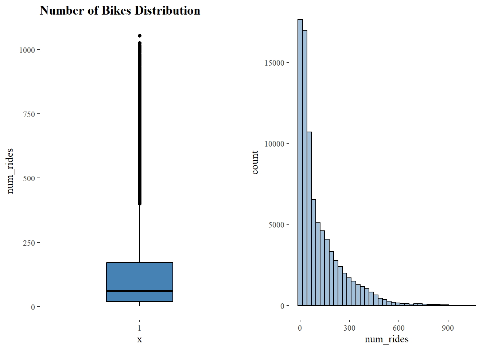
# numerical variables
plot_distribution(bike_shares, 'num_rides', title='Number of Bikes Distribution')plot_distribution(bike_shares, 'duration_secs', title='Trip Duration Distribution')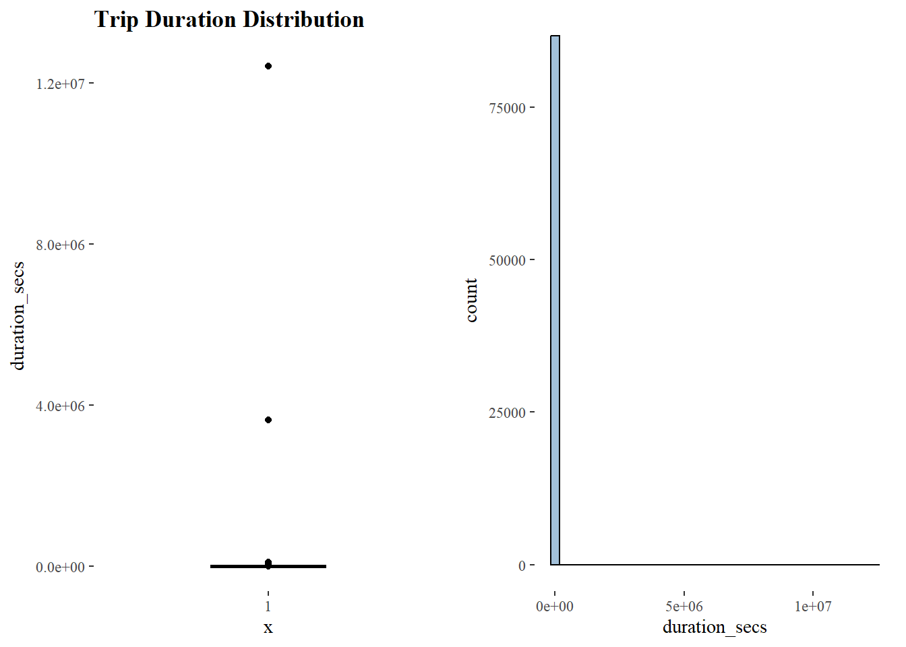
plot_distribution(bike_shares, 'distance_km', title='Trip Distance Distribution')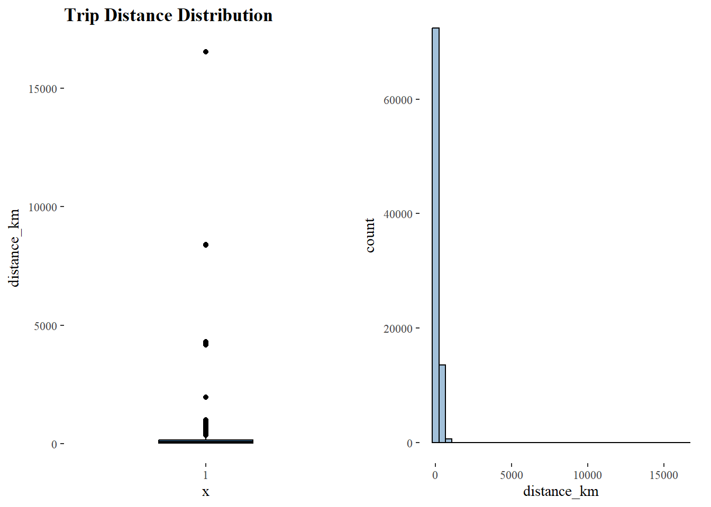
There are some strange data points in the distance and duration variables. We will clean them.
# bivariate
plot_distribution(bike_shares, 'num_rides', fill='member_casual',
title='Bike demand by membership type')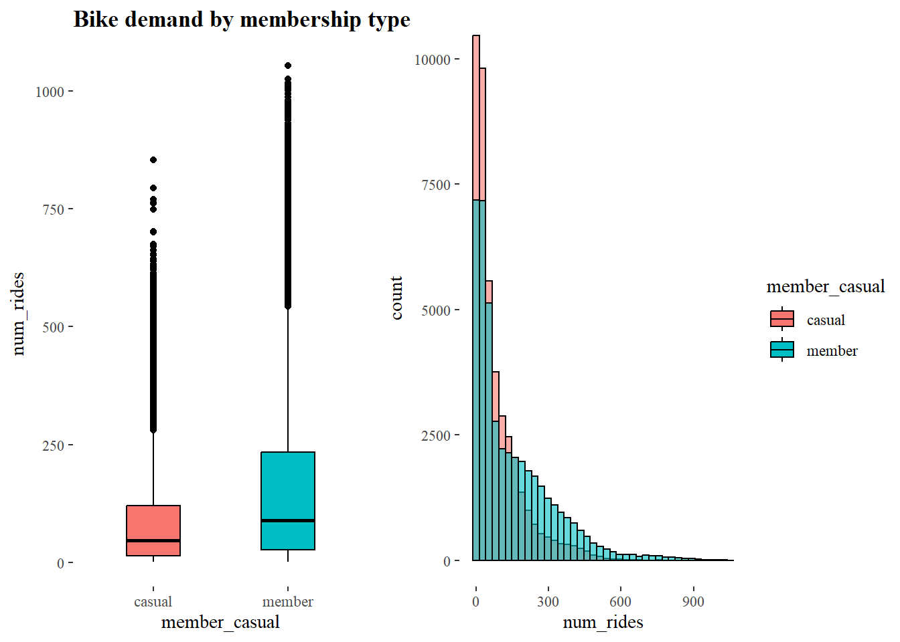
plot_distribution(bike_shares, 'distance_km', fill='member_casual',
title='Trip Distance by membership type')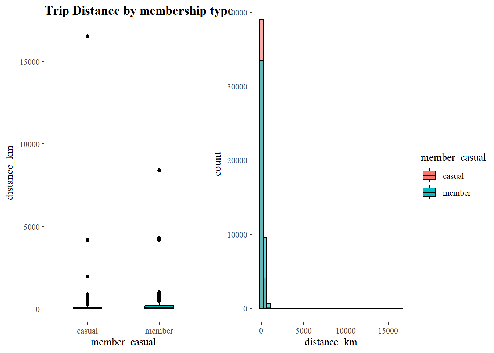
plot_distribution(bike_shares, 'duration_mins', fill='member_casual',
title='Trip Duration by membership type')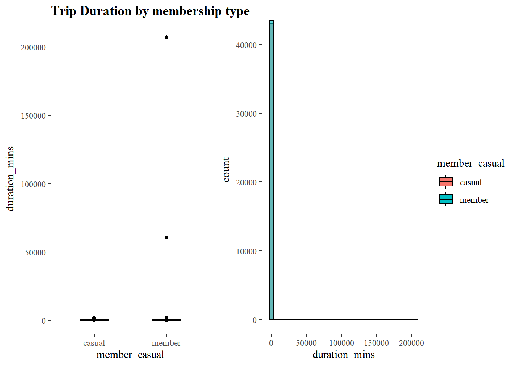
Data cleaning
Here, we will remove the extreme values from the duration and distance variables. For the duration, we will bin values above 24 hours (1440 mins or 86400 secs) to 24 hours in minutes or seconds. For distance, we will replace values above 1500km to 1500km
# clean data
bike_shares <- bike_shares |>
# binning
mutate(distance_km = ifelse(distance_km > 1500, 1500, distance_km),
duration_secs = ifelse(duration_secs > 24*3600, 24*3600, duration_secs),
duration_mins = ifelse(duration_mins > 24*60, 24*60, duration_mins)) |>
# convert to factor variables
mutate(across(where(is.character), as.factor))Analysis
Questions
How do the metrics above compare by bike type and membership type?
# by membership type
bike_shares |>
reframe(Average_Hourly_demand = mean(num_rides),
Average_Distance_km = mean(distance_km/num_rides),
Average_Duration_mins = mean(duration_mins),
.by=member_casual) |>
pivot_longer(cols = -member_casual) |>
pivot_wider(id_cols = name, names_from=member_casual, values_from=value) %>%
kableExtra::kable(align='lrr', digits=2, caption='Performance by Membership Type',
col.names=c('Name', 'Non-members', 'Members'))| Name | Non-members | Members |
|---|---|---|
| Average_Hourly_demand | 84.18 | 150.76 |
| Average_Distance_km | 1.04 | 0.96 |
| Average_Duration_mins | 23.81 | 13.67 |
# by bike type
bike_shares |>
reframe(Average_Hourly_demand = mean(num_rides),
Average_Distance_km = mean(distance_km/num_rides),
Average_Duration_mins = mean(duration_mins),
.by=rideable_type) |>
pivot_longer(cols = -rideable_type) |>
pivot_wider(id_cols = name, names_from=rideable_type, values_from=value) %>%
kableExtra::kable(digits=2, caption='Performance by Bike Type',
col.names=c('Name', 'Classic', 'Electric'))| Name | Classic | Electric |
|---|---|---|
| Average_Hourly_demand | 161.84 | 73.42 |
| Average_Distance_km | 0.87 | 1.12 |
| Average_Duration_mins | 23.37 | 14.06 |
What is the percentage of rides by membership type and bike type?
# function that aggregates a numerical variable based on a given group
aggregate_data <- function(data, column, groups){
select_cols = c(column, groups)
df <- data[,select_cols] |>
group_by(across(all_of(groups))) |>
summarize(total = sum(.data[[column]])) |>
mutate(perc = total/sum(total))
return(df)
}Bike Type
aggregate_data(bike_shares, 'num_rides', 'rideable_type') |> ggplot(aes(x=rideable_type, y=perc)) + geom_col(fill='steelblue', alpha=0.8) + geom_text(aes(label=paste(round(total/1e6,2),'M')), vjust=2, fontface='bold', color='white') + theme_tufte() + theme(legend.position='none') + labs(title='Percentage of rides by bike type', x='Bike Type', y='Percentage') + scale_y_continuous(labels=scales::label_percent(suffix='%'), breaks=seq(0,1,.1)) + scale_x_discrete(labels=c('Classic', 'Electric'))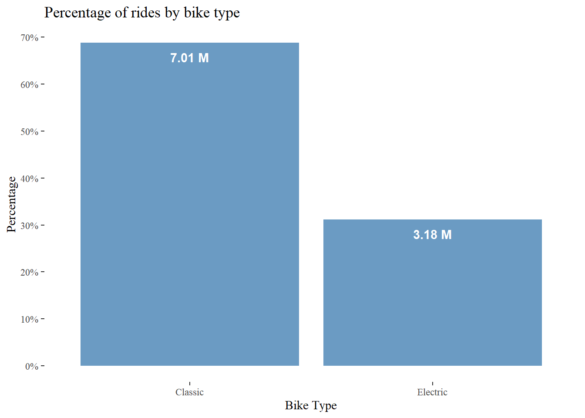
Membership Type
aggregate_data(bike_shares, 'num_rides', 'member_casual') |> ggplot(aes(x=member_casual, y=perc)) + geom_col(fill='steelblue', alpha=0.8) + geom_text(aes(label=paste(round(total/1e6,2),'M')), vjust=2, fontface='bold', color='white') + theme_tufte() + theme(legend.position='none') + labs(title='Percentage of rides by Membership status', x='Membership type', y='Percentage') + scale_y_continuous(labels=scales::label_percent(suffix='%'), breaks=seq(0,1,.1)) + scale_x_discrete(labels=c('Casual', 'Member'))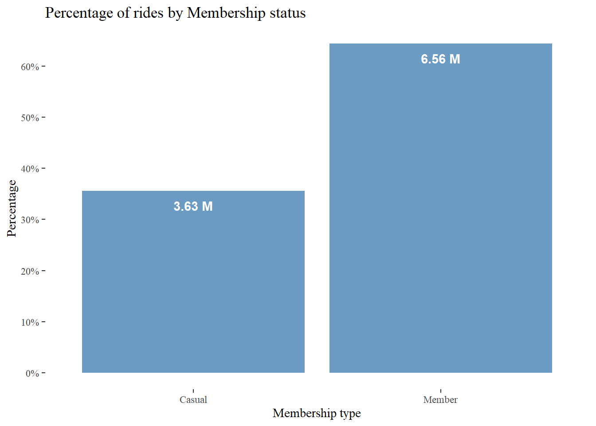
Membership type vs Bike Type
aggregate_data(bike_shares, 'num_rides', c('member_casual', 'rideable_type')) %>% inner_join( aggregate_data(bike_shares, 'num_rides', c('rideable_type', 'member_casual')), by=c('rideable_type', 'member_casual', 'total'), suffix=c('_member_vs_bike_type', '_bike_vs_member_type') ) %>% mutate(across(contains('perc'), \(x) 100*x)) %>% kableExtra::kable(digits=2, caption='Performance by Bike Type vs Membership Type', format.args=list(big.mark=','))`summarise()` has grouped output by 'member_casual'. You can override using the `.groups` argument. `summarise()` has grouped output by 'rideable_type'. You can override using the `.groups` argument.Performance by Bike Type vs Membership Type member_casual rideable_type total perc_member_vs_bike_type perc_bike_vs_member_type casual classic 2,482,521 68.44 35.41 casual electric 1,144,702 31.56 36.00 member classic 4,528,211 68.99 64.59 member electric 2,034,961 31.01 64.00
From the results above, we see that classic bikes are the most rented bike types than electric bikes while most of the rents came from registered users than unregistered users. Out of the over 10 million rides between January 2022 and June 2024, about 69% of them were rides from classic bikes while 31% of them were rides from an electric bike. On the other hand, 64% of all the rides were made by registered users while about 36% by casual users.
Drilling down, 35.4% of all rides from a classic bike and 36% from an electric bike were made by non-members. This means that about 64.6% and 64% of all the rides from a classic or electric bike were made by registered members of Capital Bikeshare. Similarly, out of all the unregistered users, 68.4% of them rented classic bikes against the about 69% of registered users, indicating that 31.6% and 31% of unregistered and registered users rented electric bikes, respectively.
What is the acceptance rate of bike sharing system Washington DC residents?
To determine the acceptance rate of bike sharing system, we will look at the percentage change of demand per day, week, month and year. This is enable us determine the growth rate at these timeframes
# adding time features
bike_shares <- bike_shares %>% mutate(year=year(pickup_hour),
month = month(pickup_hour),
hour = hour(pickup_hour),
week = week(pickup_hour),
day = day(pickup_hour))# acceptance of bike rides
pct_change <- c()
for (i in c('hour', 'week', 'month', 'day')){
res <- aggregate_data(bike_shares %>% mutate(date=floor_date(pickup_hour, i[1])),
'num_rides', 'date') %>%
mutate(pct = 100*(total-lag(total))/lag(total)) %>%
reframe(avg_change = mean(pct, na.rm=T)) %>%
pull(avg_change)
pct_change <- append(pct_change, res)
}
names(pct_change) <- c('hour', 'week', 'month', 'day')
# visualise
data.frame(pct_change) |>
rownames_to_column('name') |>
ggplot(aes(name, pct_change)) +
geom_col(fill='cornflowerblue', alpha=1) +
geom_text(aes(label=paste(round(pct_change,2),'%')), vjust=1.5,
color='white', fontface='bold') +
theme_tufte() +
theme(panel.grid=element_blank(),
axis.text.y = element_blank(),
axis.ticks.y=element_blank(),
plot.title=element_text(face='bold')) +
labs(title='Bike Aceeptance Rate by Residents',
x='Timeframe', y='Percentage Change')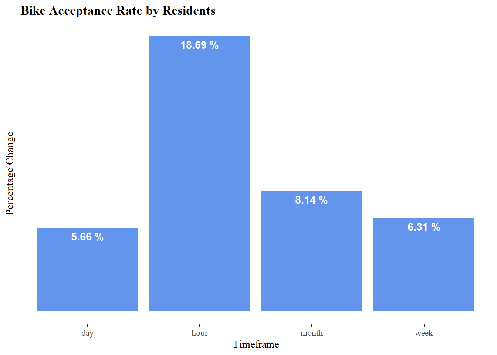
- There’s a positive acceptance of bike sharing by residents of Washington DC. By investigating the percentage change in bike demand at different time frames, we see that per hour of the day, the demand rate for bike sharing increases by about 18.7% on average, about 5.7% per day, 6.3% per week and about 8.1% per month of the year.
Next, we want to look at the rate each bike type is demanded by residents per hour, day, week and month
# acceptance by bike type
results <- data.frame(row.names=c('hour', 'week', 'month', 'day'),
classic=numeric(4), ebikes=numeric(4))
for (i in 1:2){
bike_type <- c('classic', 'electric')[i]
pct_change <- c()
for (j in rownames(results)){
res <- aggregate_data(bike_shares %>%
filter(rideable_type == bike_type) %>%
mutate(date=floor_date(pickup_hour, j[1])),
'num_rides', 'date') %>%
mutate(pct = 100*(total-lag(total))/lag(total)) %>%
reframe(avg_change = mean(pct, na.rm=T)) %>%
pull(avg_change)
pct_change <- append(pct_change, res)
}
results[i] = pct_change
}
# visualise
results |>
rownames_to_column('name') |>
pivot_longer(-name, names_to='bike_type', values_to='pct_change') |>
ggplot(aes(name, pct_change, fill=bike_type)) +
geom_col(alpha=0.8, position=position_stack(vjust=0.7)) +
geom_text(aes(label=paste(round(pct_change,2),'%')), vjust=1.5,
color='white', fontface='bold', position=position_stack(vjust=0.7)) +
theme_tufte() +
theme(panel.grid=element_blank(),
axis.text.y = element_blank(),
axis.ticks.y=element_blank(),
plot.title=element_text(face='bold')) +
labs(title='Bike Type Aceptance Rate by Residents',
x='Timeframe', y='Percentage Change', fill='Bike Type') +
scale_fill_manual(values=c('coral', 'cornflowerblue'), labels=c('Classic', 'Electric'))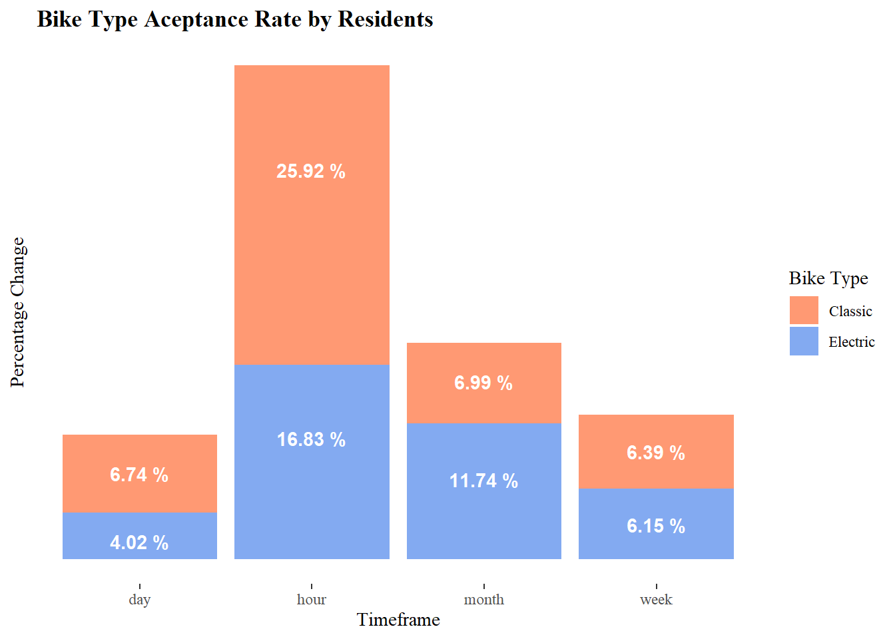
- When we look at bike demands by bike types, we see that the classic bike type is demanded more than electric bikes per hour and per day. The percentage change in demand per is slightly the same but per month, the demand for electric bikes is higher than classic bikes. This could indicate that there are some parts of the month that the demand for electric bikes are higher than classic bikes.
# acceptance by bike type
results <- data.frame(row.names=c('hour', 'week', 'month', 'day'),
casual=numeric(4), members=numeric(4))
for (i in 1:2){
member_type <- c('casual', 'member')[i]
pct_change <- c()
for (j in rownames(results)){
res <- aggregate_data(bike_shares %>%
filter(member_casual == member_type) %>%
mutate(date=floor_date(pickup_hour, j[1])),
'num_rides', 'date') %>%
mutate(pct = 100*(total-lag(total))/lag(total)) %>%
reframe(avg_change = mean(pct, na.rm=T)) %>%
pull(avg_change)
pct_change <- append(pct_change, res)
}
results[i] = pct_change
}
# visualise
results |>
rownames_to_column('name') |>
pivot_longer(-name, names_to='member_type', values_to='pct_change') |>
ggplot(aes(name, pct_change, fill=member_type)) +
geom_col(alpha=0.8, position=position_stack(vjust=0.7)) +
geom_text(aes(label=paste(round(pct_change,2),'%')), vjust=1.5,
color='white', fontface='bold', position=position_stack(vjust=0.7)) +
theme_tufte() +
theme(panel.grid=element_blank(),
axis.text.y = element_blank(),
axis.ticks.y=element_blank(),
plot.title=element_text(face='bold')) +
labs(title='Aceptance Rate by non-members and members',
x='Timeframe', y='Percentage Change', fill='Membership Type') +
scale_fill_manual(values=c('coral', 'cornflowerblue'), labels=c('Casual', 'Member'))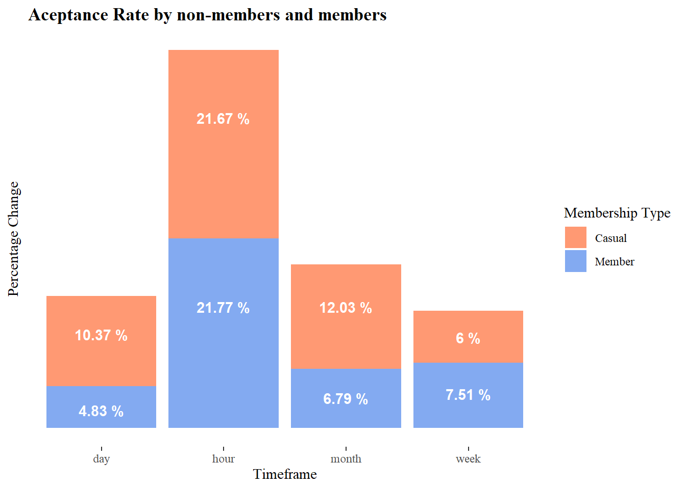
results <- data.frame()
for (i in 1:2){
member_type <- c('casual', 'member')[i]
pct_change <- data.frame()
for (j in c('hour', 'week', 'month', 'day')){
res <- aggregate_data(bike_shares %>%
filter(member_casual == member_type) %>%
mutate(date=floor_date(pickup_hour, j[1])),
'num_rides', c('date', 'rideable_type')) %>%
pivot_wider(id_cols = date, names_from=rideable_type, values_from=total) %>%
ungroup() %>%
mutate(across(where(is.numeric), function(x) 100*(x-lag(x))/lag(x))) %>%
reframe(across(where(is.numeric), \(x) mean(x, na.rm=T))) %>% unlist()
pct_change <- rbind(pct_change, c(j, member_type, res))
names(pct_change) <- c('name', 'member_type', 'classic', 'electric')
pct_change[, c(3,4)] <- sapply(pct_change[, c(3,4)], as.numeric)
}
results <- rbind(results, pct_change)
}
results |>
as.data.frame() |>
pivot_longer(cols=where(is.numeric), names_to = 'bike_type', values_to='pct_change') |>
ggplot(aes(name, pct_change, fill=member_type)) +
geom_col(alpha=0.8, position=position_stack(vjust=0.7), width=0.9) +
facet_wrap(~bike_type, ncol=2) +
geom_text(aes(label=paste0(round(pct_change,2),'%')), vjust=1.5,
color='white', fontface='bold', position=position_stack(vjust=0.7)) +
theme_tufte() +
theme(panel.grid=element_blank(),
strip.background=element_rect(fill='gray'),
axis.text.y = element_blank(),
legend.position='top',
axis.ticks.y=element_blank(),
plot.title=element_text(face='bold')) +
labs(title='Aceptance Rate by non-members and members',
x='Timeframe', y='Percentage Change', fill='Membership Type') +
scale_fill_manual(values=c('coral', 'cornflowerblue'), labels=c('Casual', 'Member'))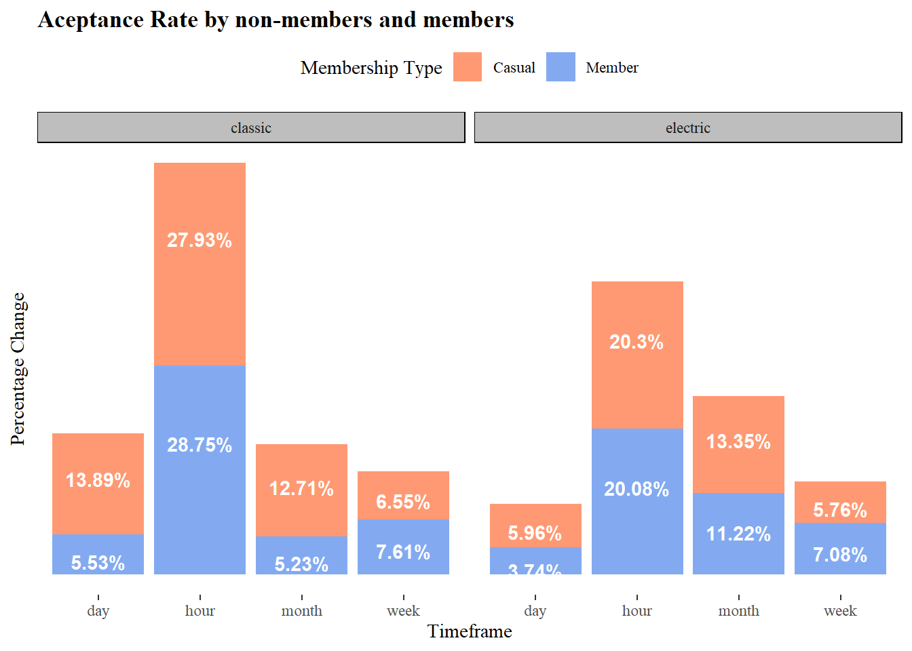